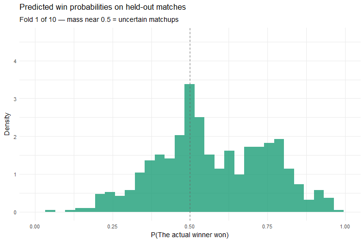
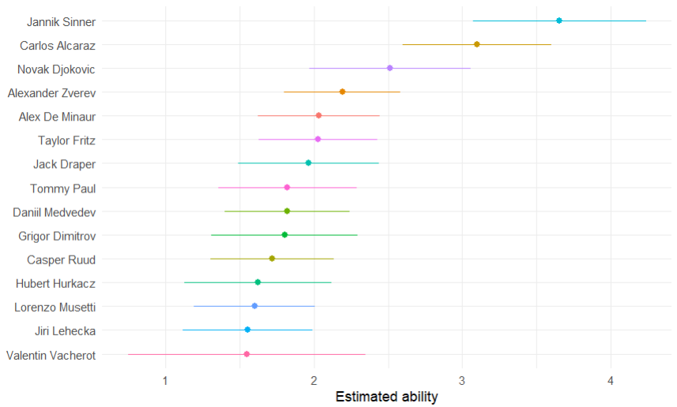
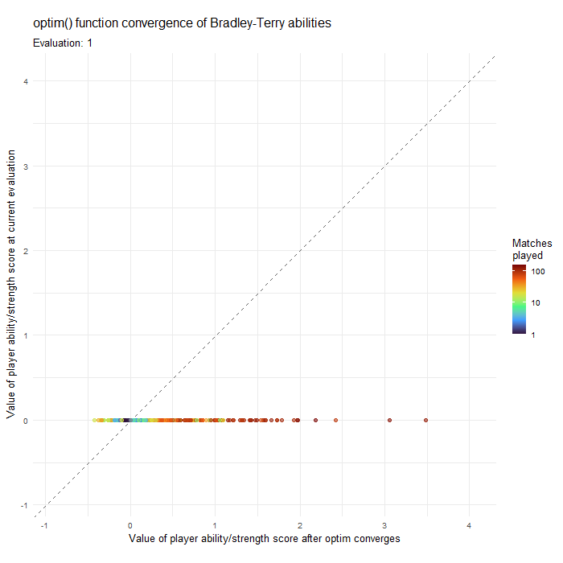

Animations and Plots
Predicted probabilities of actual winners

When we pick a training set and a test set we check what probability we assigned to the actual winner of each game in the test set. Here we see how well our model assigned probabilities to the winner in each hold-out set. We can see the plot is most active around the centre whilst being more dense to right of the centre. This is what we would expect and hope for.
- \(p_{ij}\) — probability that player \(i\) beats player \(j\)
- \(\beta_i\) — ability/strength score of player \(i\), estimated by the model \[ p_{ij} = \frac{e^{\beta_i}}{e^{\beta_i} + e^{\beta_j}} \]
\[ P(\text{actual winner won}) = \begin{cases} p_{ij} & \text{if player } i \text{ won} \\ 1 - p_{ij} & \text{if player } j \text{ won} \end{cases} \]
Centipede plot: Player rankings with uncertainty

Each row shows one of the top 15 players by estimated ability, with the dot marking the MAP estimate of \(\beta_i\) and the coloured line an approximate 95% interval calculated from the standard errors. The key feature is the overlap between neighbouring intervals, where two players’ intervals overlap substantially, the model cannot confidently say one is stronger than the other. We can see Jannik Sinner and Carlos Alcaraz are substantially better than even Novak Djokovic who himself is noticeably better than his neighbour Alexander Zverev. Valentin Vacherot large interval is also point of interest since we need to determine if this is a true reflection of his performance or as result of an issue with the data or model.
Models shrinkage visualised via optim() convergence
This animation visualises the optimisation process that produces the model’s final ability estimates. Each point represents one of the 584 ATP players, positioned by their ability score at the current stage of the optimisation (vertical axis) against their final converged estimate (horizontal axis). As optim()‘s BFGS method iterates on the negative log-posterior, we can see the points move around until settling on the 45° diagonal, at which point the current and final estimates coincide and the optimiser has converged. The players’ points are coloured by the number of matches each have played, this is a nice visualisation of the regularisation at work. Players with large match counts travel furthest from the origin, as the data dominates the prior, while sparsely observed players remain shrunk towards zero throughout. Most of the movement occurs within the first few iterations, with the remainder of the animation showing progressively finer refinements.
